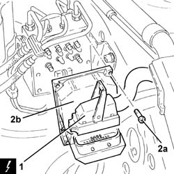

3340A20 abs electronic control unit - r+r
- Path
- Procedures > 33 BRAKING SYSTEM > 3340 A(B.S. ANTI-LOCK BRAKING SYSTEM .) > 3340A abs check/adjustment devices > 3340A20 abs electronic control unit - r+r
- Kind
- repair procedure (removal / refitting; the operation number is the code)
- Applies to
- all engines; all production periods
- Interactive page
- https://sloeber94.github.io/elrnDB-a147/en/#/3025247
Applies to: all engines; all production periods
 Removing
Removing
 Refitting
RefittingProceed with the removal 5530B10 battery - r+r .
Proceed with the removal 5530B52 Battery DRIP TRAY/SUPPORT - R.R. .
1. Disconnect the electrical connection from the A.B.S. hydraulic and electronic control unit.
 | Name | Connector |
|---|---|---|
1 | ABS control unit |
2. Undo the bolts (2a) and remove the ABS electronic control unit (2b).

Applies to: all engines; all production periods
Refitting
RemovingPlace the ABS electronic control unit back in its housing and secure it using the bolts.
Connect the electrical connection to the A.B.S. hydraulic and electronic control unit.
Proceed with the refitting 5530B52 Battery DRIP TRAY/SUPPORT - R.R. .
Proceed with the refitting 5530B10 battery - r+r .